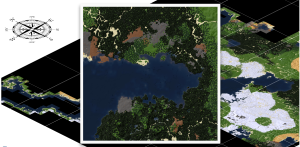

Stonecraft has many features
- Ability to walk around, dig, and build in a near-infinite voxel world
- Crafting of items from raw materials
- Fast and able to run on old and slow hardware
- Multiplayer support via servers hosted by users
- Beautiful lightning-fast map generator
- Uses open voxel game engine 'Minetest'
- You can use community mods and texture packs
- It's free and open-source
Please support Stonecraft with a donation.
Please visit the gallery to see more screenshots from Stonecraft!
News
Apr. 09, 2017 - 1.200+ Downloads in 12 days! Thank you for that successful launch of Stonecraft!
Mar. 27, 2017 - Stonecraft v1.1.0-alpha released! Published on the indie video game website itch.io. Download now and leave a comment!
Mar. 20, 2017 - Stonecraft v1.0.10-alpha released!
Feb. 11, 2017 - Stonecraft v1.0.9-alpha released!
Feb. 7, 2017 - Stonecraft v1.0.8-alpha released!
Jan. 22, 2017 - Stonecraft WorldAtlas v1.0.0 now on github.
Jan. 17, 2017 - Stonecraft v1.0.7-alpha released! Now with abandoned mines and surprise blocks!

{kind=link}
{kind=link}
{kind=link}
{kind=link}
{kind=link}
{kind=link}
Jan. 9, 2017 - First version of Stonecraft WorldAtlas is online. It shows the explored part from the huge world of the Stonecraft Survival Server. The software will be published for free and open-source. See the WorldAtlas here in action.

{kind=link}
Jan. 7, 2017 - Stonecraft v1.0.6-alpha released! Updated engine to 0.4.15, added teleporters, area protection and more!
Jan. 3, 2017 - The official Stonecraft Server is online! Join the world of Stonecraft and play with friends.
Dec. 23, 2016 - Stonecraft v1.0.5-alpha released!
Dec. 22, 2016 - Stonecraft v1.0.4-alpha released!
Dec. 18, 2016 - Stonecraft v1.0.3-alpha released!
Dec. 16, 2016 - Stonecraft v1.0.2-alpha released!
Dec. 11, 2016 - Stonecraft v1.0.1-alpha released!
Dec. 9, 2016 - Stonecraft v1.0.0-alpha released!
Download
Current release: v1.1.0-alpha (Mar. 27, 2017)
(pre-release version, maybe not stable yet). Use of Minetest engine 0.4.15.
Get source code from Github
Stonecraft source code (master)For further information have a look at my github account.
FAQs
If you experience lags, then you should first deactivate shaders and other graphic effects. On weak hardware, I would suggest to choose not much options in the world creation settings.
Nothing, Stonecraft will be released as a freeware and open-source game. But you can donate some money via PayPal to support me.
Yes, you can use texture packs. See wiki for further information.
Yes, you can install mods or create your own mods. See the developer section in wiki.
No, you don't need an account like in Minecraft.
You can simple host a game over LAN or you run a dedicated server. In my wiki you'll find more information.